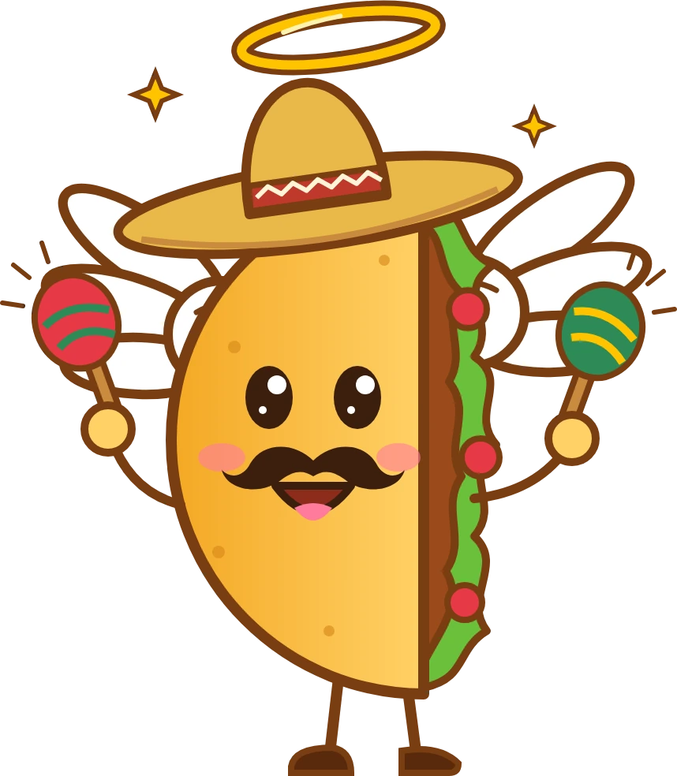
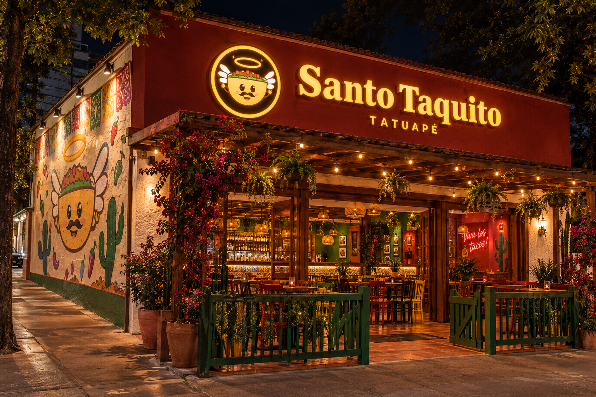
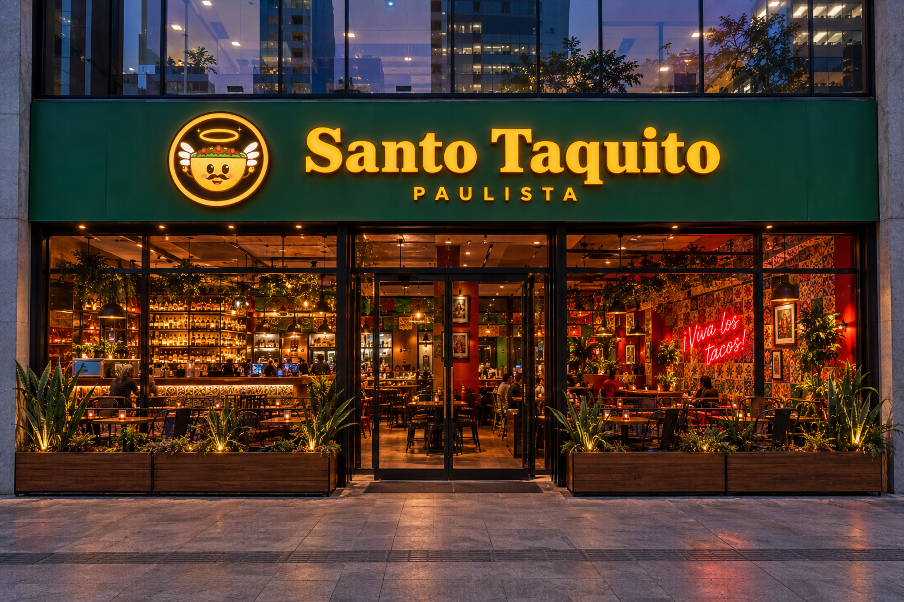
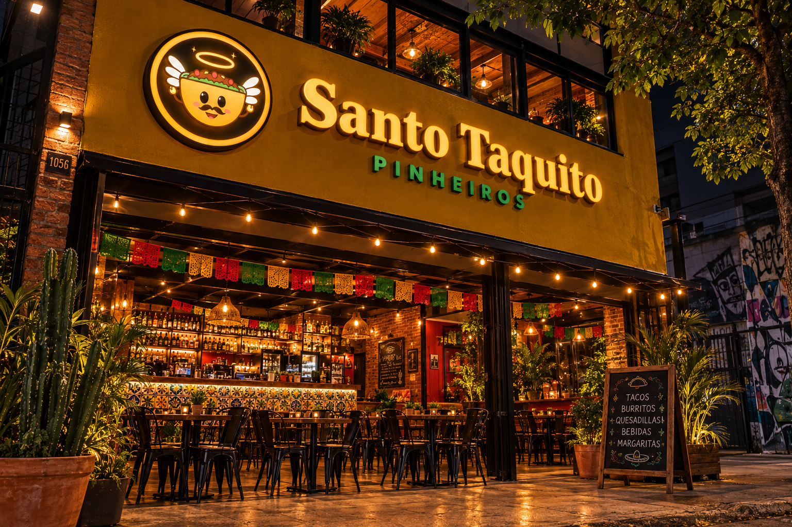

Cardapiotacos, burritos, nachos, sobremesas e bebidas. |
|
 Open drinksMargarita, micheladas e drinks à vontade por 3 horas. |
PromoçõesTerça do taco, happy hour e combos da semana. |
Nossas unidadestatuape |
Paulista |
Pinheiros |